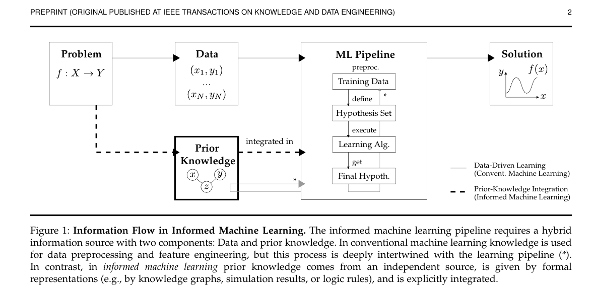
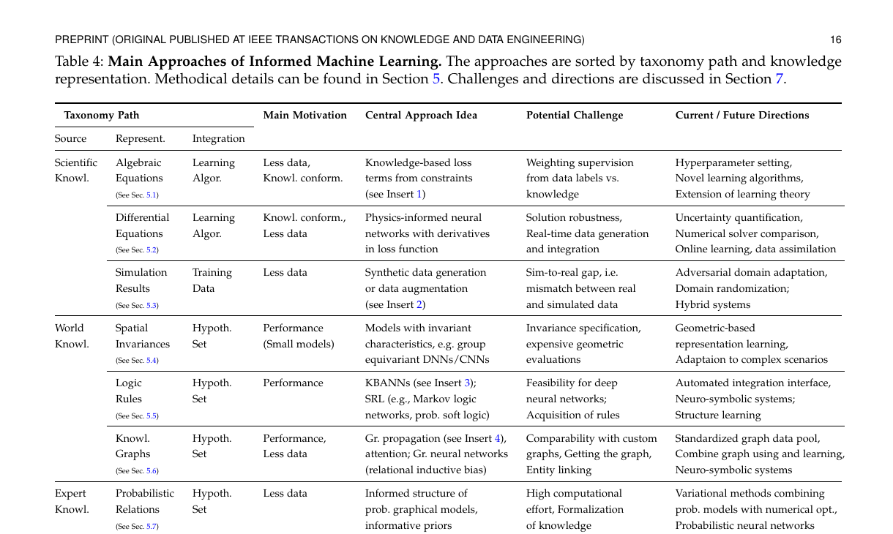
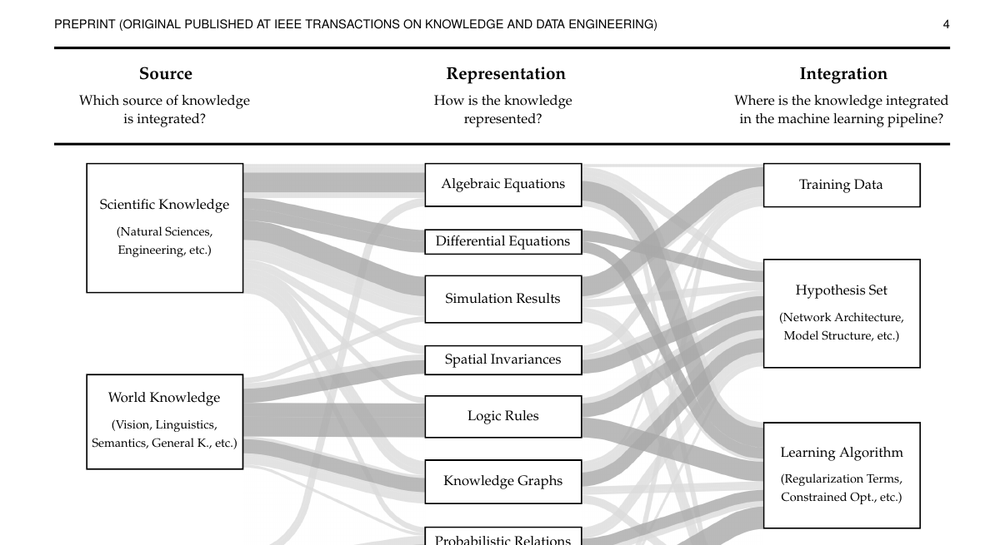
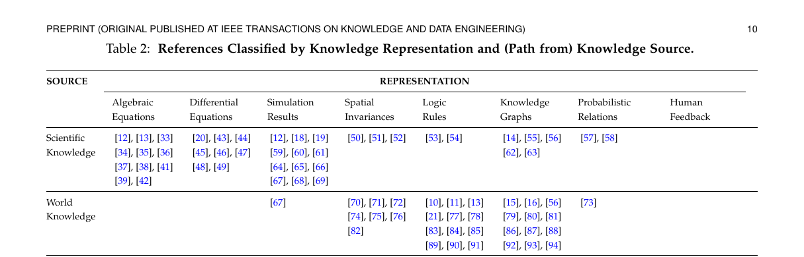
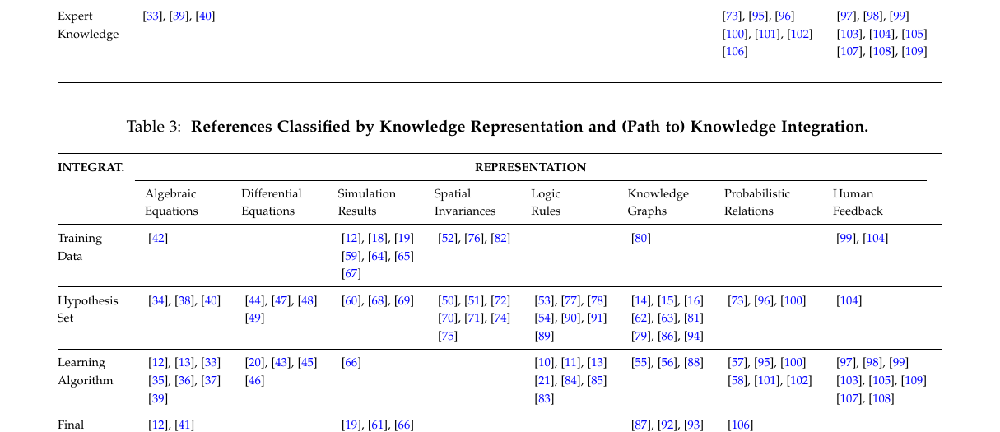
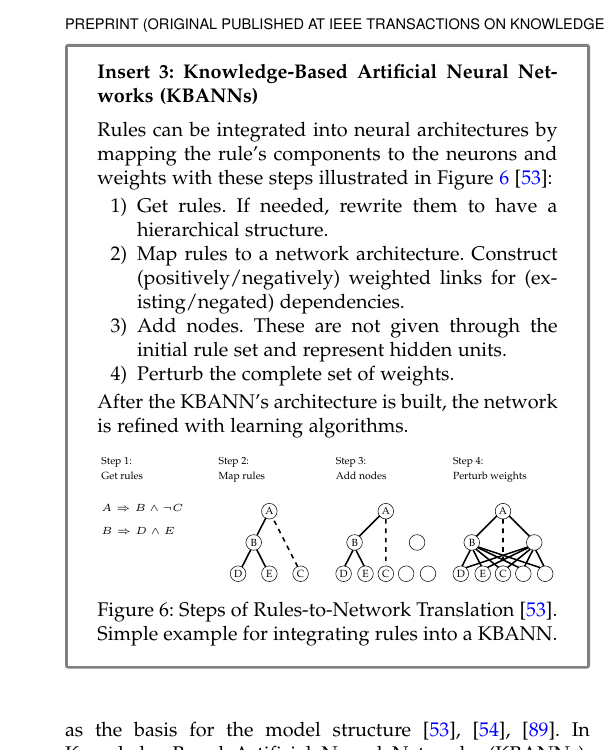
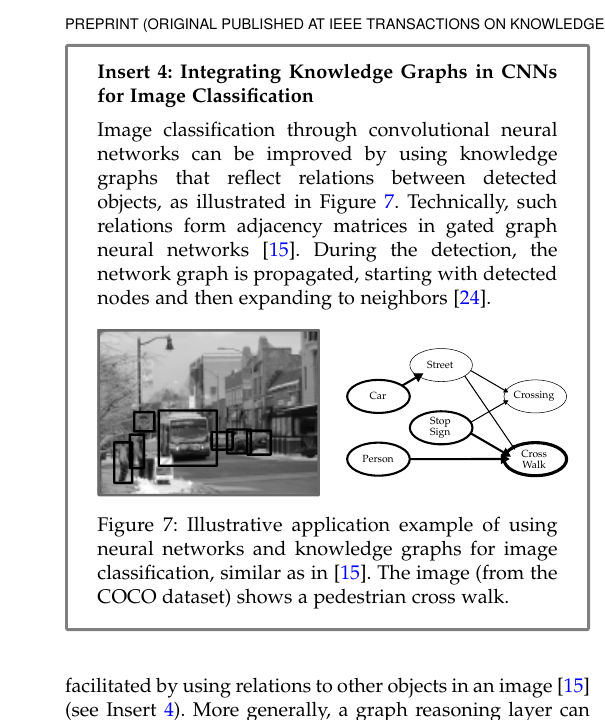

Citation
- Paper: Informed Machine Learning: A Taxonomy and Survey of Integrating Prior Knowledge into Learning Systems
- File: taxonomy_survey_2021_tkde.pdf
Core Purpose of This Survey
This paper does not propose one specific new informed ML method. Instead, it does three things:
- It clarifies the conceptual boundary of informed machine learning.
- It proposes a unified taxonomy describing where knowledge comes from, how it is represented, and how it enters a learning system.
- It organizes existing methods according to that taxonomy, and points out the challenges and future directions associated with each path.
Therefore, the most important thing when reading this survey is not to memorize model names, but to first grasp its analytical framework.
Figure 1 Close Reading: Information Flow in Informed Machine Learning

Role of the Figure
Figure 1 is not a method diagram; it is a conceptual diagram. It answers the following question:
Where exactly does informed machine learning differ in essence from ordinary machine learning?
Basic Structure of the Figure
The whole figure contains two input sources:
DataPrior Knowledge
They jointly enter the ML Pipeline and eventually produce the Solution.
Conventional machine learning mainly relies on sample data:
- start from the problem definition
- collect training data
- define the hypothesis set
- run the learning algorithm
- obtain the final hypothesis
f(x)
Informed machine learning adds an additional information source on top of this process:
- this information source is not directly inferred from the training samples
- it comes from the problem itself, scientific laws, world knowledge, expert experience, or human feedback
- and it must be explicitly connected to the pipeline in some formalized form
The Three Conditions This Figure Really Emphasizes
The authors are actually quite strict about what counts as prior knowledge. Not every kind of “experience” qualifies:
-
Independent source
Prior knowledge is not directly fitted from the current training data; it comes from outside the data. -
Formal representation
The knowledge must be expressed in a machine-operable form, such as equations, rules, graph structures, simulation results, probabilistic relations, and so on. -
Explicit integration
The knowledge does not merely remain in the researcher’s mind, nor is it only used vaguely through feature engineering. It must enter the learning process explicitly.
How to Understand the Pipeline in This Figure
Inside the ML Pipeline, there are four core components:
Training DataHypothesis SetLearning AlgorithmFinal Hypothesis
The one worth remembering most carefully is Hypothesis Set.
It is not the final trained model. Rather, it is:
- the function space into which the model is allowed to fall
- the collection of model structures and inductive biases
- what kinds of solutions are allowed and what kinds are ruled out from the start
Accordingly, prior knowledge has three especially typical insertion points:
-
Into the training data
For example, additional samples are generated through simulation. -
Into the hypothesis set
For example, rules, graph structure, or symmetry are directly encoded as architectural bias. -
Into the learning algorithm
For example, constraints are rewritten as a loss, a regularizer, or a training rule.
What This Figure Suggests for Reading Papers
When encountering an informed ML paper in the future, do not first ask “what network did it use?” Instead, ask:
- Where does its prior knowledge come from?
- In what form is that knowledge represented?
- Is it injected into the data, the hypothesis set, or the learning algorithm?
These three questions are exactly the backbone of the taxonomy that follows.
Table 4 Close Reading: How to Read the Taxonomy Path

Role of the Table
Table 4 is the most practically useful summary table in the survey. It is not listing method names; it is listing “knowledge-integration paths.” Each row can be read as a three-part expression:
Source -> Representation -> Integration
That is:
- where the knowledge comes from
- what form the knowledge takes
- through which interface the knowledge enters the machine learning system
After these three columns, the authors add:
Main MotivationCentral Approach IdeaPotential ChallengeCurrent / Future Directions
This connects the entire chain: why the method appears, what it usually does, where the main difficulties lie, and where it is likely to go next.
A Useful Way to Read This Table
Do not treat it as a static classification table. Read each row as a complete sentence.
For example:
-
Scientific Knowledge -> Algebraic Equations -> Learning Algorithm
means that the knowledge comes from scientific laws, is represented as algebraic equations, and enters the learning algorithm through a loss or constraints. -
World Knowledge -> Logic Rules -> Hypothesis Set
means that the knowledge comes from human understanding of regularities in the world, is represented as logic rules, and enters the model structure or hypothesis space. -
Scientific Knowledge -> Simulation Results -> Training Data
means that the knowledge comes from a simulation system and ultimately enters the training set as samples or augmented data.
Once read this way, the taxonomy becomes a tool for understanding methods rather than a memory exercise in classification.
Row-by-Row Interpretation of Table 4
1. Scientific Knowledge -> Algebraic Equations -> Learning Algorithm
The main motivations for this family are:
- limited data
- or the need to ensure that model outputs conform to known scientific laws
The central idea is:
- write the knowledge as algebraic constraints
- then turn those constraints into loss terms or regularizers
The most typical way to understand this line is:
The model is not only asked to fit the labels, but is simultaneously penalized for violating known knowledge constraints.
The main challenge is:
- how to balance supervision from data against supervision from knowledge
This is exactly why many informed-loss methods end up requiring extensive hyperparameter tuning.
2. Scientific Knowledge -> Differential Equations -> Learning Algorithm
This line corresponds to the broad family of physics-informed neural networks.
The central idea is:
- the model should not only fit observations
- it should also satisfy a differential equation through its derivatives
This is stronger than ordinary algebraic constraints because:
- the constrained object is not a static variable relation
- but a relation among functions and their derivatives
The authors emphasize several key difficulties:
- robustness of the solution
- integration of real-time data
- comparison with classical numerical solvers
This means that PINNs are not “better simply because PDE loss is added”; they must be seriously compared with the numerical-analysis tradition.
3. Scientific Knowledge -> Simulation Results -> Training Data
This line does not directly turn knowledge into a loss. Instead, it first “unfolds” knowledge through a simulation system into data.
Therefore, it enters Training Data, not the Learning Algorithm.
Common forms include:
- synthetic data generation
- data augmentation
- simulator-generated labels
Its key challenge is the sim-to-real gap:
- simulated data differ from real data
- a model that performs well in simulation may fail in the real world
Accordingly, future directions often involve:
- domain adaptation
- domain randomization
- hybrid systems
4. World Knowledge -> Spatial Invariances -> Hypothesis Set
The knowledge here is:
- translation invariance
- rotation invariance
- invariance / equivariance under group actions
This kind of knowledge is not taught through extra supervision; it is directly encoded into the model structure.
That is why it enters the Hypothesis Set.
In one sentence:
Instead of forcing the model to learn invariance after training, the model is only allowed from the outset to learn within structures that already satisfy that geometric regularity.
The importance of this family lies in the fact that:
- it can often achieve better generalization with smaller models
- because the structural bias itself reduces the useless search space
5. World Knowledge -> Logic Rules -> Hypothesis Set
This is a particularly useful line within informed ML, and it also marks one of the core interfaces of neuro-symbolic learning.
The representative paths mentioned by the authors include:
- KBANN
- Statistical Relational Learning
- Markov logic networks
- probabilistic soft logic
The key point is:
- logic rules are not merely a training-time penalty
- they can also be mapped into network structure, inference structure, or feasible hypothesis space
There are two central challenges:
- scalability in deep-network settings
- where the rules themselves come from
The second point is especially important, because in real tasks rules are often not given in finished form; further structure learning is required.
6. World Knowledge -> Knowledge Graphs -> Hypothesis Set
This line represents relational knowledge in graph form.
Its core idea is typically:
- to use graph propagation, attention, or graph neural networks
- and inject relational structure among entities as relational inductive bias
This path is especially well understood as:
The graph is not an ordinary additional feature; it is a structural prior about who is related to whom and how relations propagate.
The main challenges are:
- graphs are often custom-built, making papers hard to compare
- the graph itself may be incomplete
- entity linking is difficult
Therefore the authors highlight the following directions:
- standardized graph resources
- combining graph usage with graph learning
- stronger neuro-symbolic integration
7. Expert Knowledge -> Probabilistic Relations -> Hypothesis Set
Here the prior knowledge is not a hard logical constraint, but probabilistic relations, structural dependencies, or informative priors supplied by experts.
Such methods are common in:
- probabilistic graphical models
- Bayesian priors
- variational approaches
The core logic is:
-
do not first interpret the knowledge as “must be satisfied”; instead, interpret it as “certain structures or parameters are more likely to occur” Its main difficulties are:
-
high computational cost
- difficulty of formalizing expert knowledge
8. Expert Knowledge -> Human Feedback -> Learning Algorithm
This line can be read as:
- human feedback can itself serve as prior knowledge
- but it usually enters as part of the training process rather than as a static structure
Therefore it more often enters the Learning Algorithm than the Hypothesis Set.
The typical forms listed by the authors include:
- HITL reinforcement learning
- explanation alignment
- visual analytics / interactive machine learning
The difficulties here are very concrete:
- human feedback is slow
- human intuition is difficult to formalize
- evaluation protocols are unstable
What These Two Figures Together Reveal as the Real Framework of the Survey
Figure 1 provides the conceptual framework:
- informed ML = data + independently available prior knowledge
Table 4 provides the operational framework:
SourceRepresentationIntegration
In other words, what this survey truly establishes is not a “list of methods,” but an analytical coordinate system:
- First determine the source of knowledge.
- Then determine the representation of that knowledge.
- Then determine where it enters the pipeline.
- Finally analyze its motivation, method, challenges, and future directions.
Condensed Takeaways Worth Retaining
For my current reading, this survey can be condensed into the following four points:
- The essence of informed ML is not “having experience,” but having prior knowledge that comes from an independent source, is formalizable, and can be explicitly integrated.
- Any method can be located using
Source -> Representation -> Integration. - Scientific knowledge more often enters the
Learning Algorithm, world knowledge more often enters theHypothesis Set, and simulation-based knowledge more often entersTraining Data. - The value of this survey is not that it provides one unified model, but that it provides one unified way of reading the field.
Questions Worth Pursuing After Reading
- Which knowledge representations can be transformed into one another, such as rules, graphs, and probabilistic relations?
- What is the essential difference between placing the same knowledge in the
Hypothesis Setversus theLearning Algorithm? - When data and knowledge conflict, which should the system trust more?
- Where are the boundaries between informed ML and neuro-symbolic learning, physics-informed learning, and causal learning?
Section 4 Close Reading: Taxonomy Is Not a Static Classification Table but a Navigation Map
Where This Section Sits in the Overall Survey
The role of Section 4 is not to enumerate method details, but to abstract into a unified framework the recurring patterns that the authors observed throughout the literature.
In other words:
- Section 2 answers “what counts as informed ML”
- Section 3 answers “how this taxonomy was distilled from the survey”
- Section 4 answers “what dimensions and elements the taxonomy itself contains”
- only in Section 5 do concrete methods get placed into the taxonomy
So if Section 5 feels crowded and scattered, that usually does not mean the methods themselves are chaotic; it means Section 4 has not yet been fully digested.
The Three Main Axes of the Taxonomy
The authors decompose the method space of informed ML into three dimensions:
Knowledge SourceKnowledge RepresentationKnowledge Integration
These correspond to three questions:
- Where does the prior knowledge come from?
- In what form is it expressed?
- At which point in the machine learning pipeline is it integrated?
Among these three axes, the authors actually emphasize the second one most: representation.
This is because:
- source is more about application background
- integration is more about the method interface
- representation is the actual bridge between the two
That is, whether knowledge can be absorbed by a machine learning system depends not only on whether knowledge exists, but on what form that knowledge takes.
Knowledge Source: The Three-Way Split Is Not Mainly About Discipline but About Degree of Formalization
Section 4.1 divides knowledge sources into:
Scientific KnowledgeWorld KnowledgeExpert Knowledge
These three categories are easy to misread as a simple disciplinary partition, but what the authors really want to express is a spectrum:
- from more formal, explicitly validated knowledge
- to more general but often implicitly validated world knowledge
- to more experience-driven and intuitive expert knowledge
So this is not a strict ontology, but a practical classification.
The authors explicitly acknowledge that:
- these categories are not exhaustive
- and they are not fully disjoint
Their main purpose is to identify common paths of knowledge integration.
Knowledge Representation: The Core Interface of the Taxonomy
Section 4.2 is the most critical part of the entire taxonomy.
The authors extract eight common representation types:
- algebraic equations
- differential equations
- simulation results
- spatial invariances
- logic rules
- knowledge graphs
- probabilistic relations
- human feedback
One especially important judgment here is:
The authors are not trying to construct the mathematically minimal set of representation types; they are preserving the representations that most commonly appear in the literature and are closest to practice.
That is why:
- differential equations are listed separately instead of being folded back into algebraic equations
- simulation results are also listed separately instead of being treated merely as the output of an equation solver
The reason is not that these forms cannot be transformed into each other, but that they often correspond to different machine learning interfaces.
The Eight Representation Types Can Be Memorized as Three Groups
First group: scientific-law-type
- algebraic equations
- differential equations
- simulation results
This group usually serves either to make the model conform to scientific laws or to supplement data through simulation.
Second group: symbolic-and-structural
- spatial invariances
- logic rules
- knowledge graphs
This group usually serves structural bias, relational modeling, or interpretable constraints.
Third group: uncertainty-and-interaction
- probabilistic relations
- human feedback
This group usually deals with expert experience, intuition, incomplete knowledge, and human-machine interaction.
This grouping is a more stable memory aid than simply memorizing eight isolated labels.
Knowledge Integration: Knowledge Does Not Only Enter Through Loss
The value of Section 4.3 is that it splits “knowledge entering the model” into four possible locations:
Training DataHypothesis SetLearning AlgorithmFinal Hypothesis
Many people hear “informed ML” and immediately think “add a knowledge loss.”
That is only one possibility, and only the Learning Algorithm column.
What the authors want to show is:
- knowledge can be used to create data
- knowledge can constrain the model space
- knowledge can modify the training rule
- knowledge can even be used after training to validate or refine the final output
The Two Most Common Locations
Although all four locations are possible, the authors clearly state that most papers concentrate on two central stages:
Hypothesis SetLearning Algorithm
This also matches actual reading experience:
- structural-bias methods often encode knowledge into architecture / graph / kernel / rule structure
- constraint-optimization methods often encode knowledge into loss / regularization / constrained optimization
Figure 2 Shows Not Only the Taxonomy but the Taxonomy Plus Literature Frequency

Figure 2 is easy to see as an ordinary classification diagram, but it actually overlays survey findings:
- the size of each block reflects its relative frequency in the literature
- the width of each Sankey path reflects how often a particular combination occurs
- darker paths indicate the main paths emphasized by the authors
This is important because it means:
This is not the space of all logically possible methods, but the method space that has already been repeatedly practiced in the literature.
Therefore the figure has two uses:
- as an entry map for newcomers
- as a baseline / gap-analysis tool for researchers
Two Directions for Reading the Taxonomy
In Section 4, the authors make a very useful observation that is easy to overlook:
- application-oriented readers may prefer to read from left to right
- method-oriented readers may prefer to read from right to left
That is:
Reading Left to Right
If one starts with a knowledge source, for example:
- physical equations
- medical graphs
- linguistic rules
then the natural questions are:
- what representation is most suitable?
- through which interface should it be injected?
Reading Right to Left
If one starts with a method, for example:
- constrained optimization
- graph neural networks
- teacher-student distillation
then the reverse questions become:
- what types of representation fit this interface best?
- from what kinds of knowledge source do those representations usually come?
This perspective is especially useful for topic selection.
An Empirical Pattern in Section 4: Different Sources Often Prefer Different Representations
At the junction of Section 3.2 and Section 4, the authors repeatedly emphasize an empirical regularity:
Scientific Knowledgeoften goes toward equations / simulationsWorld Knowledgeoften goes toward logic rules / graphs / invariancesExpert Knowledgeoften goes toward probabilistic relations / human feedback
This is not an absolute rule, but it suggests that the “character” of the knowledge source influences the form it is naturally suited to.
The point most worth remembering is:
informed ML is not “first choose one universal method and then stuff every kind of knowledge into it”; rather, different knowledge types are naturally biased toward different interfaces.
The Relation Between Section 4 and Table 2 / Table 3


Section 4 provides the conceptual taxonomy.
Table 2 and Table 3 provide the observed cross-distributions from the survey.
This can be understood as follows:
- Section 4 tells you what the axes are
- Table 2 tells you how source and representation tend to pair
- Table 3 tells you how representation and integration tend to pair
So the survey is not just giving one big figure. It actually provides three layers of information:
- conceptual framework
- empirical frequency
- representative main paths
My Summary of Section 4
The real contribution of Section 4 is not that it invents a few classification names, but that it reorganizes informed ML from a collection of scattered methods into a navigable method space.
This can be compressed into one note:
The significance of the taxonomy is not that it archives papers, but that it decomposes the question “how does knowledge enter a learning system?” into the three analyzable interfaces of source, representation, and integration.
Section 5.5 Close Reading: What the Logic Rules Route Is Really Doing
Why Logic Rules Occupy Such an Important Position in the Survey
Among all representation types, logic rules are the closest to traditional symbolic AI.
Their importance lies in the fact that:
- they preserve explicit semantic relations
- they can interface with learning systems in multiple ways
- they are one of the most direct points of contact between informed ML and neuro-symbolic learning
In other words, logic rules are not a peripheral representation type, but a very central informed ML path.
5.5.1: Logic Rules Most Commonly Come from World Knowledge
The authors say that logic rules can come from multiple sources, but the most common one is World Knowledge.
The survey gives several representative examples:
-
object-property rules
for example, animals that fly and lay eggs are more likely to be birds -
object-relation rules
for example, certain characters often co-occur in game scenes -
linguistic rules
for example, when a sentence containsbut, the sentiment after it dominates; or citation-tag order constraints -
social / relational dependency rules
for example, authors who cite each other are more likely to belong to related research fields
These examples together show one key fact:
A logic rule is particularly well suited to expressing relational knowledge among discrete objects.
Unlike equations, it does not emphasize continuous numerical relations. Instead, it emphasizes:
- if-then structure
- co-occurrence
- implication
- symbolic dependency
5.5.2: Logic Rules Mainly Follow Two Integration Routes
A central observation in this subsection is:
- logic rules often enter the
Hypothesis Set - and secondarily the
Learning Algorithm
That is, rules either reshape the model structure or reshape the training objective.
Although both are called “rule injection,” they are fundamentally different.
Route A: Injecting Rules into the Hypothesis Set
1. The Deterministic Route: KBANN / Neural-Symbolic Architecture
A representative method here is KBANN.
Its core idea is not:
- first train an ordinary network
- then use rules as a post-processing step
Rather, it is:
- directly translate rules into network structure and initial weights
Insert 3 decomposes this process into four steps:

- obtain the rules and rewrite them hierarchically if needed
- map the rules to the network architecture
- add hidden nodes not explicitly given in the rules
- perturb the entire set of weights and continue learning
A concise way to retain the distinction is:
KBANN is not “rules as a regularizer”; it is “rules first shape the network, and data then refine the network.” So it embodies a strong structural prior.
2. The Probabilistic Route: SRL / MLN / PSL
Another way of placing rules into the hypothesis set is not through deterministic structure but through probabilistic structure.
The authors place this line under statistical relational learning.
Representative frameworks include:
- Markov Logic Networks
- Probabilistic Soft Logic
The basic idea is:
- first-order logic rules are no longer treated as hard constraints that must be strictly satisfied
- but as templates that define probabilistic dependencies
That is, the rules determine:
- which random variables are related
- which joint configurations are more likely
- how satisfying a rule increases probability mass on certain states
This step is crucial because it connects:
- symbolic rule
- probabilistic uncertainty
Thus this line can be understood as:
Rules no longer operate only at the level of “true / false,” but shape the hypothesis space at the level of “more likely / less likely.”
Route B: Injecting Rules into the Learning Algorithm
The biggest difference here is:
- the model structure itself may not be directly determined by the rules
- but the training objective is constrained by them
The authors mention semantic loss as a representative family.
The core idea is:
- turn logic rules into a differentiable penalty term
- then add that term into the objective function
The survey mentions several technical interfaces:
- use
t-normto relax logic rules into continuous form - derive semantic loss from first principles using a set of axioms
The significance of this route is:
The rules are preserved, but the model can still remain a standard deep learning architecture instead of being completely rewritten.
So it is often more flexible and easier to embed into existing pipelines.
Why the Teacher-Student Line Deserves to Be Remembered Separately
Section 5.5 also highlights another useful variant:
- first integrate rules on the teacher side
- then let the student imitate the teacher
This idea matters because it suggests that rules do not have to directly constrain the final deployed model itself.
They can also:
- constrain a stronger, more “knowledge-heavy” teacher first
- then transfer the knowledge to the student through distillation
This is exactly the typical logic behind works like LogicNet.
So from the perspective of your toy projects:
logic_net_toyis closer to rules -> learning algorithm -> teacher-studentsemantic_loss_toyis closer to rules -> learning algorithm -> differentiable constraint
Whereas KBANN is another distinct branch:
- rules -> hypothesis set -> architecture design
All three belong to the logic-rules route, but they are not the same kind of method.
What Is Most Easily Confused Within the Logic-Rules Literature
At the surface level, logic-rule methods all look like attempts to “make the model obey rules.” But in reality they operate on at least three different levels:
-
Structural level
rules shape the model structure or feasible hypothesis space, as in KBANN -
Probabilistic level
rules define dependency templates among random variables, as in MLN / PSL -
Optimization level
rules become differentiable penalties during training, as in semantic loss
If these three levels are not kept separate, the logic-rule literature easily turns into an undifferentiated mixture.
The Authors’ Judgment on the Logic-Rules Route
In Section 7, the authors identify two core challenges for logic rules:
- can this route still scale efficiently in the era of deep neural networks?
- if rules are not given in advance, where do they come from?
The first question corresponds to:
- scalability
- automated interfaces for knowledge integration
- more realistic neuro-symbolic systems
The second corresponds to:
- rule acquisition
- structure learning
In other words, the real difficulty of the logic-rules route is not only “how to use rules,” but also “how rules are obtained, maintained, and updated.”
My Summary of Section 5.5
The logic-rules route is not one single method family, but an entire collection of interfaces for connecting symbolic rules to learning systems.
It can be compressed into one note:
The fundamental value of logic rules is not merely that they provide constraints, but that they turn discrete relational knowledge into computable structural bias, probabilistic dependence, or optimization signals.
Section 5.6 Close Reading: What the Knowledge Graphs Route Is Really Doing
Why Knowledge Graphs Form a Distinct Main Line in Informed ML
Knowledge graphs are easy to misread as another notation for logic rules. The authors separate them out for a clear reason.
Logic rules emphasize:
- propositional relations
- implication structure
- if-then constraints
Knowledge graphs emphasize:
- entities
- relations
- graph connectivity structure
So the core of graphs is not “whether a rule holds,” but:
how objects in the world are connected to one another, and how that relational structure can be used as relational inductive bias by the model.
That is why knowledge graphs in this survey are not merely a data resource, but a distinct type of knowledge representation.
5.6.1: Graphs Most Often Come from World Knowledge, but Not Only from World Knowledge
In 5.6.1 the authors first emphasize:
- graph is a highly general modeling tool
- in principle it can represent many kinds of structured knowledge
But in the surveyed literature, the most common source is still World Knowledge.
World Knowledge
The authors’ representative examples are very telling:
-
Visual Genome
turns object attributes and object relations in natural images into a graph -
ConceptNet
turns everyday commonsense concepts and relations into a graph -
WordNet
turns semantic and lexical relations among words into a graph
Together these examples show:
Graphs are particularly suited to expressing “what entities are related to what,” rather than “what propositional constraint must hold.” This is the root difference between graphs and logic rules.
This is especially clear in language tasks:
- rules look more like local syntactic / semantic constraints
- graphs look more like concept networks, lexical networks, or knowledge-base structure
Scientific Knowledge
The authors also emphasize that graphs are not only for commonsense knowledge bases.
In scientific settings, graphs can directly represent structured systems, such as:
- spring-coupled masses in physical systems
- gene-protein interaction networks in medicine
- hierarchical diagnostic systems such as ICD
This means:
Graph is not a “natural-language knowledge-base-only” format, but a general-purpose representation of relational structure.
Whenever objects and relations are central, graph becomes a natural interface.
5.6.2: Knowledge Graphs Can Enter Almost Every Part of the Pipeline
The observation worth remembering most in this subsection is:
- knowledge graphs appear in all four integration locations
- but the most prominent one is still the
Hypothesis Set
This is somewhat similar to logic rules, but the graph route focuses more on relational structural bias than on rule constraints.
Route A: Graphs Enter the Hypothesis Set
This is the path the authors regard as most central.
1. Graph Neural Networks as Relational Structural Bias
The authors explicitly interpret methods like GNNs as:
- models whose architecture already assumes that the world is composed of interrelated objects
In other words, graph enters the hypothesis set not as “add one graph constraint,” but as:
- organize the computation itself around nodes and edges
This is what the survey refers to as relational inductive bias.
One can understand it as:
From the beginning, the model does not treat samples as isolated vectors, but as entities and relations inside a graph.
2. Explicitly Connecting an External Knowledge Graph as a Second Information Source
Besides “the model itself is graph-structured,” there is an even stronger design:
- an external knowledge graph already exists
- and it is connected to the network as an additional information source
In this case the graph is not only inductive bias; it becomes a genuine second source of knowledge.
The image-classification example in Insert 4 is easy to understand:

- objects are first detected in the image
- the relations among objects are given by the knowledge graph
- graph propagation starts from the detected nodes and expands to neighbors
- semantic relations among objects help disambiguate the current object
For example, in a street scene:
personcrosswalkstop signstreet
Each object alone may be ambiguous, but within one relational graph the judgment becomes much stronger.
3. The Significance of a Graph Reasoning Layer
The authors also mention a more general notion:
graph reasoning layer
Its idea is:
- insert an additional graph-propagation layer into some existing neural layer
- enhance the representation through a knowledge graph
This means graph integration does not necessarily require the entire model to be a GNN end-to-end.
A more common realistic scenario may be:
- the backbone remains CNN / Transformer / MLP
- and only a graph-based reasoning module is inserted in the middle
This is important in engineering terms because it is easier to combine with existing models.
Route B: Graphs Enter the Training Data
This route is especially prominent in the graph literature, and the keyword highlighted by the authors is distant supervision.
The basic idea is:
- use entity relations from a knowledge graph to automatically annotate text
- thereby generate training samples
The most naive form is:
- if a sentence contains a pair of entities already known to be related in the graph
- treat that sentence as a training sample
But this introduces substantial noise, so later work uses attention and related mechanisms to reduce the impact of noisy samples.
This route can be interpreted as follows:
A knowledge graph does not have to enter the model directly; it can first be turned into weak supervision and enter the training data.
This is somewhat analogous to simulation results:
- both can first “unfold” knowledge into trainable samples
The difference is that graph-based unfolding usually produces automatic labels or distant supervision rather than simulated data.
Route C: Graphs Enter the Learning Algorithm
The authors mention two especially memorable families.
1. Graph Laplacian Regularization
This is the classical idea of graph regularization:
- variables that are close on the graph should behave more similarly in the model
- variables that are unconnected can vary more freely
Such methods are common in:
- bioinformatics
- pathway-information integration
Its essence is:
The graph structure is translated into an optimization preference rather than directly translated into model structure.
2. Knowledge-Graph-Enhanced Embedding / Language-Model Training
Another family uses graph relations as extra context during the training of word embeddings or language models.
For example:
- use graph-based lexical relations to enrich the context of word2vec
- use knowledge-graph embeddings to support the training of models like ERNIE / BERT
This suggests that when graph enters the learning algorithm, it often plays the role of:
- a source of regularization
- a source of additional context
- a source of semantic supplementation for representation learning
Route D: Graphs Enter the Final Hypothesis
This route is easy to overlook, but it has real practical value.
The authors mention several representative examples:
- post-process word embeddings using knowledge graphs
- validate semantic segmentation in autonomous driving using street-map graphs
- refine predicted probabilities in object detection using graph consistency
This means that graph does not have to participate in training.
It can also serve after training as:
- consistency checking
- result refinement
- knowledge-based validation
From the perspective of safety and trustworthy AI, this route is especially important.
The Key Difference Between Knowledge Graphs and Logic Rules
These two routes are easy to mix up, but it is best to separate them sharply.
Logic Rules Are More Like:
- “if A and B, then C”: focused on propositional constraints and logical satisfiability
Knowledge Graphs Are More Like:
- “A has some relation to B”: focused on entity networks and relation propagation
Therefore:
- logic rules more naturally lead to semantic constraints, teacher-student distillation, and rule templates
- knowledge graphs more naturally lead to graph propagation, graph attention, GNNs, and entity linking
Of course, the two can approach each other:
- graph edges can imply rules
- rules can also be converted into graph structure
But in this survey they are classified separately because the center of gravity of their machine-learning interfaces is different.
The Authors’ Judgment on the Knowledge-Graph Route
In Section 7, the authors’ summary of knowledge graphs is especially clear.
There are three main challenges:
-
Different papers use different graphs, so methods are difficult to compare
Many works begin from templates such as ConceptNet or Visual Genome, but then apply extensive custom modifications. -
Getting the graph itself is difficult
This is exactly what the authors callGetting the graph. -
Entity linking is difficult
Especially when the model must align entities in text or images to nodes in the graph, this step often becomes the bottleneck.
The corresponding future directions include:
- building standardized graph pools / benchmarks
- combining graph usage with graph learning
- continuing toward neuro-symbolic systems
The single most important point to remember here is:
The real difficulty of knowledge graphs often lies not in “how to write the graph network,” but in where the graph comes from, how good the graph is, and how graph nodes align with the objects of the current task.
My Summary of Section 5.6
The core of the knowledge-graph route is not simply “use a graph model,” but to treat relational structure as a second information source or a structural bias inside the learning system.
This can be compressed into one note:
The essential value of a knowledge graph is that it turns an entity-relation network into relational structure that the model can exploit to improve representation, training, or result validation.
Logic Rules vs Knowledge Graphs: Comparative Notes
Why These Two Routes Must Be Compared Explicitly
In the informed ML literature, logic rules and knowledge graphs are often placed together under “symbolic / structured knowledge.”
But if they are not carefully separated, two misunderstandings easily arise:
- treating a graph as “a rule in different clothing”
- treating a rule as “just one kind of edge in a graph” Neither view is accurate enough.
A better understanding is:
- logic rules answer “which propositional relations ought to hold”
- knowledge graphs answer “which entities are related, and how that relational structure propagates” So although both are structured knowledge, their interface focus differs.
One-Sentence Distinction
The shortest version to remember is:
logic rulesare more like constraintsknowledge graphsare more like structure
With one further step of detail:
- the core semantic unit of
logic rulesis proposition, condition, and implication - the core semantic unit of
knowledge graphsis entity, relation, and connectivity pattern
Comparison 1: The Basic Unit of Knowledge Is Different
Logic Rules
Its basic units are usually:
- propositions
- predicates
- logical relations
- if-then structures
Typical forms look like:
A and B -> C- “if a sentence contains but, then the sentiment after it dominates”
-
“if an object flies and lays eggs, it is more likely to be a bird” The emphasis here is:
-
when the condition holds, the conclusion should be supported or satisfied
Knowledge Graphs
Its basic units are usually:
- entity nodes
- relation edges
- local neighborhoods
- global connectivity structure
Typical forms look like:
(Mario, appears_with, Peach)(word, synonym_of, another_word)(gene_a, interacts_with, gene_b)
The emphasis here is:
- who is related to whom
- how those relations are organized across the graph
Comparison 2: What They Want the Model to Learn Is Different
Logic Rules Want the Model to Learn:
- to satisfy certain logical constraints
- not to violate certain discrete rules
- to maintain some kind of symbolic consistency in reasoning
So this line is more about:
- consistency
- constraint satisfaction
- rule-guided reasoning
Knowledge Graphs Want the Model to Learn:
- to exploit relational structure among objects
- to use neighbors and paths to enrich representations
- to propagate evidence through a relation network
So this line is more about:
- relational reasoning
- context enrichment
- structure-aware representation learning
Comparison 3: The Most Common Integration Locations Are Different
Logic Rules
In the survey, the most common locations are:
Hypothesis SetLearning Algorithm
That is:
- rules shape structure
- or rules enter the loss / optimization
Representative interfaces:
- KBANN
- MLN / PSL
- semantic loss
- teacher-student rule distillation
Knowledge Graphs
In the survey, all four locations appear, but the most prominent one remains:
Hypothesis Set
In addition, the following are also common:
Training DataLearning AlgorithmFinal Hypothesis
Representative interfaces:
- GNN
- graph reasoning layer
- graph attention
- distant supervision
- graph Laplacian regularization
- knowledge-based validation
In one sentence:
Rules more often “constrain the model,” whereas graphs more often “reconstruct the way the model sees the world.”
Comparison 4: The Typical Method Families Are Different
Common Logic-Rules Families
-
KBANN
rule -> network structure -
MLN / PSL / SRL
rule -> probabilistic dependency template -
semantic loss
rule -> differentiable constraint term -
teacher-student
rule -> teacher guidance -> student imitation
Common Knowledge-Graph Families
-
GNN / graph propagation
graph structure -> relational inductive bias -
graph reasoning layer
insert graph propagation into an existing backbone -
graph attention
use graph neighborhoods to enhance representation or feature selection -
distant supervision
graph relations -> automatic annotation -> training data -
graph regularization
graph Laplacian-type constraints -> learning algorithm -
knowledge-based validation
graph consistency -> posterior correction or result validation
Comparison 5: The Kinds of Knowledge They Best Express Are Different
Scenarios Better Suited to Logic Rules
When knowledge naturally looks like the following, rules are usually more natural:
- “if …, then …”
- “these cannot hold simultaneously”
- “some discrete constraint must be satisfied”
- “labels have exclusion / implication / ordering relations”
-
“the explanation must satisfy some satisfiability structure” Typical tasks include:
-
label constraints
- logical reasoning
- structured-output constraints
- rule templates in weak supervision
- symbolic rules in sentiment / sequence tagging
Scenarios Better Suited to Knowledge Graphs
When knowledge naturally looks like the following, graphs are usually more natural:
- “who is related to whom”
- “objects participate in multiple kinds of relations”
- “neighbors, paths, and local context must be exploited”
- “concepts and entities form a network”
-
“extra evidence must be propagated through relations” Typical tasks include:
-
object relations in images
- entity / concept networks in NLP
- recommendation / knowledge-base QA
- biomedical interaction networks
- any task involving many entities, many relations, and contextual propagation
Comparison 6: The Main Failure Modes Are Different
Major Difficulties for Logic Rules
-
Where do the rules come from?
In many tasks, rules are not given in finished form. -
How are the rules formalized?
It is not easy to turn natural-language experience into logical form. -
What if rules conflict with data?
Data noise, knowledge noise, and incompleteness can all create conflict. -
How scalable are the rules?
In deep networks, rule injection is not always stable or efficient.
Major Difficulties for Knowledge Graphs
-
Where does the graph come from?
This is exactly the survey’sgetting the graph. -
How good is the graph?
The graph may be incomplete, outdated, sparse, or mismatched to the task. -
Is entity linking reliable?
Whether input objects can be aligned correctly to graph nodes is often the main bottleneck. -
Why are different methods hard to compare?
Because each paper often customizes its graph resource.
Comparison 7: They Interface with Differentiable Learning Systems in Different Ways
When Logic Rules Enter Differentiable Systems
What typically needs to happen is:
- discrete logic must be relaxed into continuous form
- rule satisfaction must become a loss
- rule templates must be mapped into structure or probabilistic terms
That is, when rules enter neural systems they often undergo a transition from “discrete” to “learnable interface.”
When Knowledge Graphs Enter Differentiable Systems
What typically needs to happen is:
- the graph becomes a message-passing structure
- adjacency relations become attention / propagation / regularization
- nodes and edges become continuous embeddings
That is, graphs are more naturally “structural” from the start, and therefore connect more directly to neural representation learning.
Comparison 8: The Two Are Not Opposed; They Can Work Together
Although they differ, in many tasks they can naturally be combined.
A common division of labor is:
- use the graph to provide the relational backbone among entities
- use rules to specify which inferences or outputs are acceptable
That is:
- the graph provides the relational background
- the rule provides the inferential constraint
Going one step further:
- edge types in a graph may induce rules
- rules may help filter valid relations in a graph
So the more accurate statement is not “rule versus graph, choose one,” but:
When knowledge contains both a relational network and symbolic constraints, the two should often cooperate with different roles.
Four Very Practical Questions for Choosing a Method
When reading a paper and trying to quickly determine which route it belongs to, ask four questions:
- Is the core of the knowledge expressing “constraints,” or expressing a “relation network”?
- Is the model mainly “satisfying rules,” or “using neighbors and connectivity structure”?
- Is the main interface loss / constraint, or propagation / attention / graph architecture?
- If the graph were removed, or if the rule were removed, would the model lose structural context or logical consistency?
These four questions are usually sufficient to locate the paper quite clearly.
How This Relates to Your Current Reading Path
Given your current path, this comparison is especially useful:
-
LogicNet
more clearly belongs to the logic-rules route, with the emphasis on rules -> teacher/student -> learning algorithm -
Semantic Loss
also belongs to the logic-rules route, with the emphasis on rules -> differentiable constraint -
Knowledge Graph-oriented work
usually leans more toward relations / propagation / graph-enhanced representation than toward logical satisfiability itself
This means that when you later read graph-based papers, you should not first ask “what rule does it use?” Instead, ask:
- how are entities and relations defined?
- how does the graph enter the model?
- is the graph propagating information, or constraining outputs?
Final Compressed Memory Aid
The shortest contrast is:
Logic Rules: propositional constraints, if-then structure, rule consistency, loss / architecture / probabilistic templateKnowledge Graphs: entity relations, graph structure, neighborhood propagation, GNN / attention / validation
Compressed into one sentence:
Rules are more like “telling the model what it must not get wrong,” while graphs are more like “telling the model who is related to whom.”
Bridging Understanding: How Section 4, 5.5, and 5.6 Fit Together
If Figure 1, Figure 2, Table 4, and the discussions of logic rules and knowledge graphs are considered together, a very clear hierarchy emerges:
- Figure 1 says that the essence of informed ML is “data + independently available prior knowledge.”
- Section 4 says that this prior knowledge can be systematically classified via
Source -> Representation -> Integration. - Section 5.5 unfolds
Logic Rulesto show how symbolic rules become structural bias or training constraints. - Section 5.6 unfolds
Knowledge Graphsto show how relational structure becomes graph propagation, graph attention, graph regularization, or result validation.
So:
- Section 4 provides the method space
- Section 5.5 and 5.6 provide two detailed case studies of symbolic / relational routes
That is why reading the survey becomes much easier if the taxonomy is digested first, and then logic rules and knowledge graphs are read separately.
Compressed Version Worth Keeping in Mind
Section 4
- The taxonomy is not a static classification table; it is a navigation coordinate system for informed ML.
Representationis the mediating interface between application knowledge and learning algorithms.- Only by combining source, representation, and integration can one truly locate an informed ML method.
Section 5.5
- Logic rules are one of the most central symbolic knowledge representations in informed ML.
- Rules can reshape model structure, reshape the training objective, or define probabilistic dependencies.
- KBANN, MLN / PSL, and semantic loss / teacher-student are three different levels of the logic-rules route.
Section 5.6
- Knowledge graphs are one of the most central relational-structure representations in informed ML.
- Graphs can enter training data, hypothesis set, learning algorithm, and final hypothesis, though the most common location is the hypothesis set.
- Graph propagation, graph attention, GNNs, distant supervision, graph Laplacian regularization, and knowledge-based validation are the key interfaces on this route.